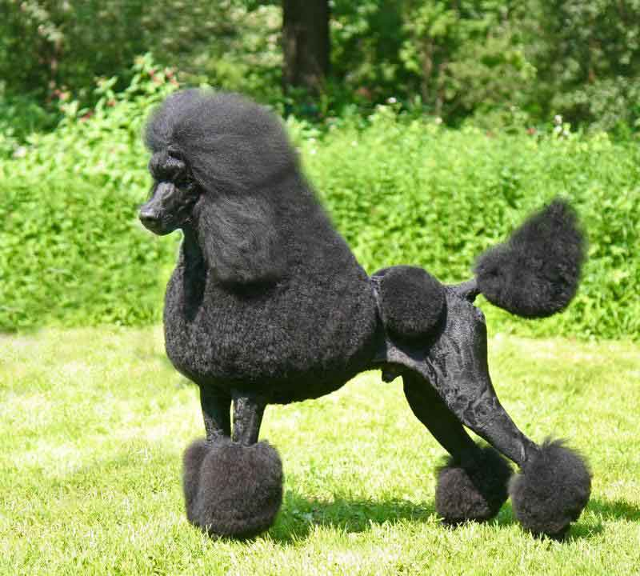

Породы собак
Немецкая овчарка — порода собак, изначально использовалась в качестве пастушьей и служебно-розыскной собаки. Немецкая овчарка была получена в результате селекции и скрещивания некоторых разновидностей гуртовых собак Центральной и Южной Германии. Различают гладкошёрстную и длинношёрстную разновидности.
Лабрадо́р-ретри́вер — порода собак. Первоначально была выведена в качестве охотничьей подружейной собаки. Лабрадоры используются на охоте, в качестве собак-поводырей, собак-спасателей, но главным образом в роли компаньонов. Порода берёт своё начало на острове Ньюфаундленд на восточном побережье Канады.
Золоти́стый ретри́вер, или го́лден-ретри́вер, — порода охотничьих собак, выведенная в Великобритании в XIX веке.
Сибирский хаски — заводская специализированная порода собак, выведенная чукчами северо-восточной части Сибири и зарегистрированная американскими кинологами в 1930-х годах как ездовая собака, полученная от аборигенных собак Дальнего Востока России, в основном из Анадыря, Колымы, Камчатки
Ротве́йлер — немецкая порода собак, относящаяся к группе молоссов, сформированная в районе города Ротвайль и на берегах реки Неккар. Собаки этого типа являются одними из самых древних в Германии, их происхождение уходит к собакам Римской Империи.
Бе́рнский зенненху́нд — порода пастушьих собак, происходящая из швейцарского кантона Берн
Та́кса — порода охотничьих собак, отличающаяся короткими ногами. Существует несколько разновидностей такс, отличающихся размерами и весом — стандартные, миниатюрные и кроличьи. Также такс разделяют по шёрстному покрову на гладкошерстных, длинношёрстных и жесткошёрстных. Таксы имеют множество окрасов.

Англи́йский бульдо́г — короткошёрстная порода собак типа мастифов. По способу использования стандарт относит породу к собакам-телохранителям и компаньонам. Современные английские бульдоги выведены во второй половине XIX века, в основе породы — староанглийский бульдог, травильная порода собак, ныне вымершая.

Пудель — порода, которая на данный момент относится преимущественно к группе декоративных собак. Изначально пудель являлся рабочей собакой, в частности использовался на охоте. Пудель занимает второе место в рейтинге самых умных пород, составленном доктором Стенли Кореном, после бордер-колли.
Подняться НАВЕРХ